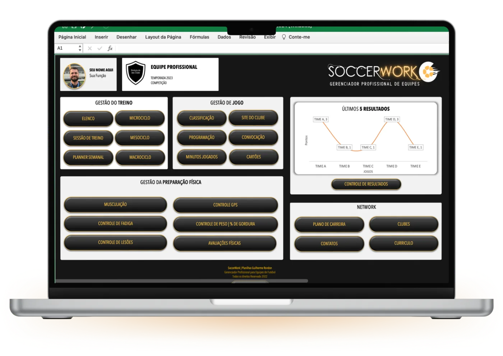

No PIX
Melhor preçoR$ 397à vista
R$ 141 a menos que no cartão
Pagar no PIX- 46 planilhas interligadas
- 16 modelos de relatório em PDF
- Atualizações futuras
- Suporte pelo WhatsApp
- Windows e Mac, com Excel
Versão 5.0, com 46 planilhas
Planilhas de Excel interligadas para planejar a temporada, monitorar carga e recuperação e levar relatórios prontos para a comissão técnica.
Veja o depoimento de 6 preparadores que usamPlanejamento, carga, recuperação, avaliação física e relatórios, tudo interligado num arquivo de Excel que é seu.
Ver as ferramentasUm passeio pelo painel e pelas principais planilhas, com dados de verdade. É o jeito mais rápido de saber se o sistema serve para a sua rotina.
Apresentação do sistema
Do painel você chega a cada planilha com um clique. Os dados conversam entre si: a PSE lançada no treino alimenta carga, monotonia, strain e os relatórios.

Escolha uma área e veja cada planilha de perto. Clique para ampliar ou, no computador, passe o mouse para usar a lupa.
Planejamento
Cada teste e cada controle vira um documento com o escudo do clube, pronto para imprimir ou mandar pelo celular.
1 de 16
Seis preparadores físicos gravaram como o SoccerWork entrou na rotina deles. Escolha um nome para assistir.
Antonio JuniorPreparador físico
Depender só da estrutura do clube limita o seu trabalho. Com o SoccerWork, o seu método, os seus dados e os seus relatórios vão com você para qualquer equipe.
Comprar por R$ 397Sem mensalidade. Você paga uma vez e usa por quanto tempo quiser.
Novas planilhas e melhorias chegam para quem já comprou. Até hoje, todas foram gratuitas.
É um arquivo de Excel no seu computador. Abre no CT, no hotel ou no ônibus da delegação.
Edite as planilhas, apague o que não usa e inclua as suas.
Dúvida na instalação ou no uso? Você fala direto com quem desenvolveu.
Depois da compra você recebe por e-mail o login para baixar o arquivo.
No PIX
Melhor preçoR$ 397à vista
R$ 141 a menos que no cartão
Pagar no PIXNo cartão
12x deR$ 44,88
Total de R$ 538,56
Parcelar no cartãoSe não servir para a sua rotina, você pede o reembolso integral em até 7 dias, como prevê o art. 49 do Código de Defesa do Consumidor. Antes e depois da compra, o suporte é com quem desenvolveu.
Tirar dúvidas no WhatsAppCartão e boleto pela Kiwify. PIX direto para Luis Esteves, desenvolvedor do SoccerWork.
O SoccerWork nasceu da rotina de um preparador físico e foi construído por um ex-treinador que hoje desenvolve sistemas.
Idealizador do SoccerWork
Preparador físico profissional, hoje no Shenzhen City, da primeira divisão chinesa. Desenhou o SoccerWork a partir dos controles que usa no dia a dia.
Desenvolvedor do SoccerWork
Ex-treinador de futebol e analista de desempenho, CEO da Sttudio11. Desenvolveu o sistema e atende o suporte.
Não achou a sua? Pergunte no WhatsApp.
Um sistema de 46 planilhas de Excel interligadas para gerenciar a preparação física de uma equipe de futebol. Funciona no Windows e no Mac, desde que o Excel esteja instalado. Recomendamos a versão mais recente do Excel.
Não. É um arquivo de Excel que fica no seu computador. Por isso funciona sem internet e você pode editar tudo.
Você recebe um e-mail da plataforma de pagamento com o login para baixar o arquivo. Se não chegar, chame no WhatsApp (51) 99173-6138 ou escreva para soccerwork@sttudio11.com.br.
Sim, 7 dias. Se não servir para você, devolvemos o valor. Antes de pedir o reembolso, fale com o suporte: a maioria das dúvidas se resolve rápido.
PIX (R$ 397), cartão de crédito em até 12x de R$ 44,88 ou boleto. No cartão, dá para dividir o valor em dois cartões.
46 na versão 5.0. O número cresce a cada atualização.
Abre, mas não recomendamos: o Excel não se adapta à tela pequena e os botões do painel ficam difíceis de tocar. Tablets têm o mesmo problema. Use no computador e mande os PDFs pelo celular.
Sim. Dá para editar, excluir e incluir planilhas suas.